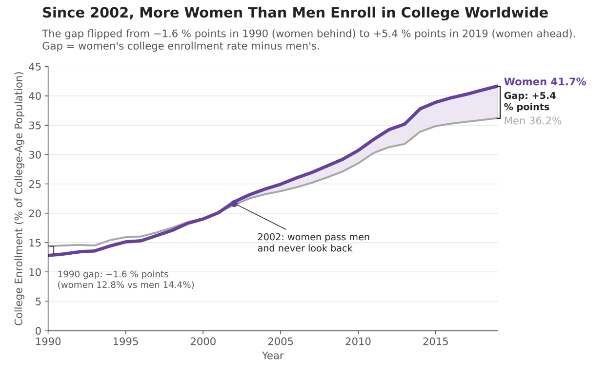
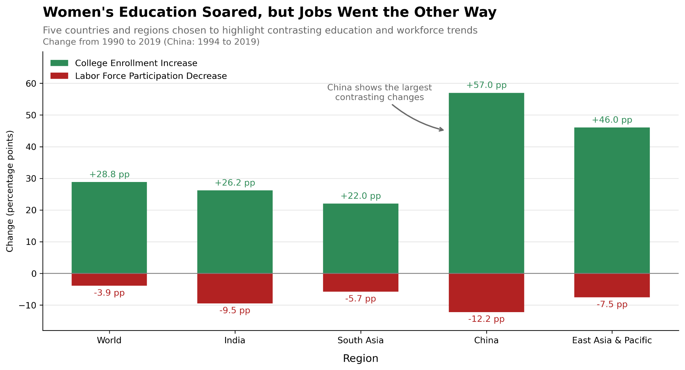

Aarman Sachdev, assachdev@ucsd.edu
Chase Wada, cmwada@ucsd.edu
Elias Robles, errobles@ucsd.edu

Worldwide, women went from trailing men in college enrollment in 1990 to leading them by more than 5 points in 2019.
Design Decisions and Rationale:

In five of the world's most populous places, women's college enrollment rose sharply while their share in the workforce fell.
Design Decisions and Rationale:
[REFLECTION PARAGRAPH 1]
[REFLECTION PARAGRAPH 2]
[REFLECTION PARAGRAPH 3]